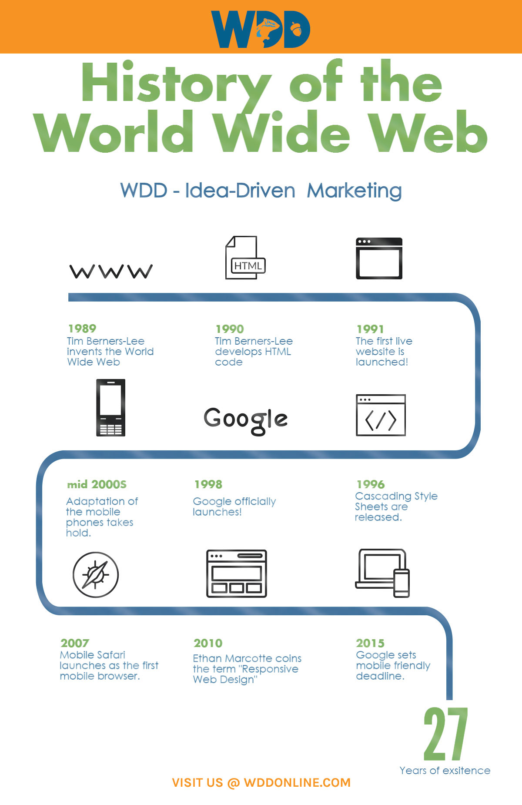

The Internet
The Origins.
The origins of the internet are rooted in the USA of the 1950s. The Cold War was at
its height and huge tensions existed between North America and the Soviet Union.
Both superpowers were in possession of deadly nuclear weapons, and people lived in
fear of long-range surprise attacks. The US realised it needed a communications
system that could not be affected by a Soviet nuclear attack.
At this time, computers were large, expensive machines exclusively used by
military scientists and university staff.
ARPANET.
President Dwight D. Eisenhower formed the Advanced Research Projects Agency (ARPA) in 1958, bringing together some of the best scientific minds in the country. Their aim was to help American military technology stay ahead of its enemies and prevent surprises, such as the launch of the satellite Sputnik 1, happening again. Among ARPA’s projects was a remit to test the feasibility of a large-scale computer network.Y
Lawrence Roberts was responsible for developing computer networks at ARPA, working with scientist Leonard Kleinrock. Roberts was the first person to connect two computers. When the first packet-switching network was developed in 1969, Kleinrock successfully used it to send messages to another site, and the ARPA Network—or ARPANET—was born.
Once ARPANET was up and running, it quickly expanded. By 1973, 30 academic, military and research institutions had joined the network, connecting locations including Hawaii, Norway and the UK.
As ARPANET grew, a set of rules for handling data packets needed to be put in place. In 1974, computer scientists Bob Kahn and Vint Cerf invented a new method called transmission-control protocol, popularly known as TCP/IP, which essentially allowed computers to speak the same language.
After the introduction of TCP/IP, ARPANET quickly grew to become a global interconnected network of networks, or ‘Internet’.
The ARPANET was decommissioned in 1990.

World Wide Web.
The terms ‘World Wide Web’ and ‘internet’ are often confused. The internet is the networking infrastructure
that connects devices together, while the World Wide Web is a way of accessing information through the medium of the internet.
Tim Berners-Lee first proposed the idea of a ‘web of information’ in 1989. It relied on ‘hyperlinks’ to
connect documents together. Written in Hypertext Markup Language (HTML), a hyperlink can point to any other
HTML page or file that sits on top of the internet.
In 1990, Berners-Lee developed Hypertext Transfer Protocol (HTTP) and designed the Universal Resource Identifier
(URI) system. HTTP is the language computers use to communicate HTML documents over the internet, and the URI,
also known as a URL, provides a unique address where the pages can be easily found.

The Modern Internet.
The Modern internet, as we know it brings this vast world into few clicks away from our fingertips. Leisure, security, services, banking, online education, even the most important comodities in our lives such as water and electricity are handled and is functioning the way it is because of the internet.